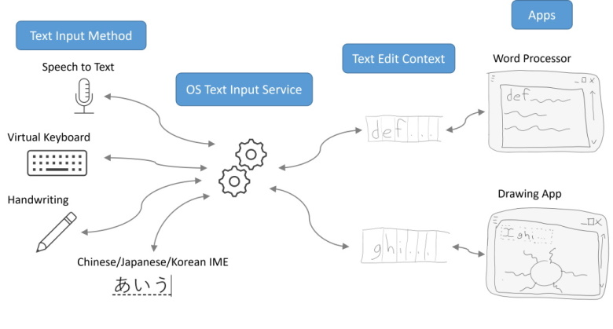

The {{EditContext}} is a new API that allows authors to more directly participate in the text input process.
Introduction
Background and Motivation
Modern operating systems provide mechanisms to produce text in a variety of ways: speech-to-text, virtual keyboards, handwriting recognition and many more. When an app wants to consume text input from these various sources, it must first provide a view of its currently editable text to the operating system. The view of editable text provides a common language that apps (having a variety of different document models) and sources of text (having a variety of different input methods) can both understand. Both the apps and input sources communicate with one another by expressing their desired changes to the state of the common view as an event that the other can handle to facilitate the text input process.
For the purposes of this document, a producer of text is known as a Text Input Method. The view provided by an app which wants to consume text is called a Text Edit Context. The service provided by the OS to facilitate the editing of text in the [=Text Edit Context=] by the [=Text Input Methods=] is called a Text Input Service.

Many [=Text Input Methods=] using a [=Text Input Service=] to communicate with many apps through their [=Text Edit Contexts=].
Here’s a typical flow for the text input process in more detail:
A user places focus into an editable region of the app.
The app produces a [=Text Edit Context=] describing its editable region according to the standards set forth by the [=Text Input Service=] and provides that [=Text Edit Context=] to the [=Text Input Service=].
The [=Text Input Service=] triggers a [=Text Input Method=] to provide some user interface for capturing text input from the user and provides the [=Text Input Method=] the app generated [=Text Edit Context=].
The [=Text Input Method=] reads the location of selection and nearby text from the [=Text Edit Context=] to help tailor its user experience.
The [=Text Input Method=] may also read screen coordinates for where the selection and editable region are located so that it can properly position its user interface next to the text being edited.
The user interacts with the [=Text Input Method=] user interface to input text in some [=Text Input Method=]-specific way.
The [=Text Input Method=] describes its desired modifications to the text and selection in the [=Text Edit Context=] in response to the user’s input.
The app handles an event describing the desired modifications to its [=Text Edit Context=] and renders the result to the user.
A sequence diagram illustrating a typical flow for text input.
Existing user agents handle the details of this text input process so that the author’s responsibility ends at declaring what elements of the document represent an editable region. Authors express which regions are editable using input elements, textarea elements, contenteditable elements, or by setting the designMode attribute to true to mark an entire document as editable.
As an editable region of the document is focused, the user agent automatically produces the [=Text Edit Context=] from the contents of the editable region and the position of the selection within it. When a [=Text Input Method=] produces text, the user agent translates the events against its [=Text Edit Context=] into a set of DOM and style modifications – only some of which are described using existing events that an author can handle.
Authors that want to produce sophisticated editing experiences may be challenged by the current approach. If, for example, the text and selection are rendered to a canvas, user agents are unable to produce a [=Text Edit Context=] to drive the text input process. Authors compensate by resorting to offscreen editable elements, but this approach comes with negative implications for accessibility, it deteriorates the input experience, and requires complex code to synchronize the position of the text in the offscreen editable element with the corresponding text in the canvas.
With the introduction of this EditContext API, authors can more directly participate in the protocol for text input and avoid the pitfalls described above.
The EditContext Model
An {{EditContext}} is a JavaScript projection of the [=Text Edit Context=] concept discussed in the previous section. Using an {{EditContext}}, an author can mark a region of the document editable by associating an instance of an {{EditContext}} with an element.
Associating an {{EditContext}} to an element makes that element intrinsically focusable. When the element is focused, the user agent will use the state of the {{EditContext}} to construct a [=Text Edit Context=] that is provided to the [=Text Input Service=] of the OS:
Instead of deriving the contents of the [=Text Edit Context=] from the DOM, it will be taken from the {{EditContext.text}} property.
Instead of deriving the location of selection within that text from the document’s selection, the user agent will use the offsets from the {{EditContext.selectionStart}} and {{EditContext.selectionEnd}} properties.
Instead of querying the DOM’s associated CSS boxes for the size and position of selection, character bounds, and the editable region of the document, the {{EditContext.selectionBound}}, {{EditContext.characterBounds}} and {{EditContext.controlBound}} will be used.
Using an EditContext, an author can mark a region of the document editable by associating an EditContext object with an element as shown in the example below:
In the example below, the author is using a canvas to draw an editable region that allows the user to input a single line of text rendered with a monospace font. The text for the editable region is maintained by the author as a String. The text offsets for the selection in the editable region are maintained by the author as a pair of Numbers: selectionStart and selectionEnd. The Numbers refer to the count of the number of UTF-16 codepoints to the left of the start and end of the selection respectively. For the sake of communicating the bounding boxes for the current selection and the editable region of the document to Text Input Services, the author also computes the bounding rectangle in CSS pixels for the selection and the editable region of the document. The offset of the rectangle is expressed relative to the origin of the canvas element since that is the element to which the author has associated an EditContext. Since the model for the author’s representation of text and selection location matches the form expected by the EditContext API, the author can simply assign those properties to the EditContext associated with the canvas whenever those values change.
Building on the previous example, in response to user input, authors should handle the events of both the editable element (in this case a canvas) and the EditContext.
Input events against the DOM continue to describe the user’s intent
Against the EditContext, {{TextUpdateEvent}} describes changes to the text, the selection, and the composition range properties of the EditContext. {{TextFormatUpdateEvent}} describes changes to the style of the text. The updates received by the author’s code for text, selection, style, composition range changes should be rendered back to the canvas so the user can see what they are typing. {{CharacterBoundsUpdateEvent}} describes what character bounds are needed by the [=Text Input Service=] to support [=Text Input Method=] to properly display its user interface. After receiving {{CharacterBoundsUpdateEvent}}, the author is responsible to compute the requested character bounds and call {{EditContext/updateCharacterBounds}} to update the character bounds cached in the EditContext.
Below example shows how to handle {{TextUpdateEvent}}, {{TextFormatUpdateEvent}}, and {{CharacterBoundsUpdateEvent}} to update the model and render the result to the canvas.
Interactions with Other Editing Primitives
An author doesn’t have to use a canvas element with an EditContext. In the example below the author uses a div to establish an editable region of the document and renders the contents into that editable region using various other styled elements, images and text. This allows the author to leverage other built-in editing primitives from the user agent such as selection and spellcheck.
This specification defines conformance criteria that apply to a single
product: the user agent that implements the interfaces that
it contains.
Conformance requirements phrased as algorithms or specific steps may be
implemented in any manner, so long as the end result is equivalent. (In
particular, the algorithms defined in this specification are intended
to be easy to follow, and not intended to be performant.)
Extensions to the Element interface
partial interface Element {
attribute EditContext? editContext;
};
editContext
An {{EditContext}}, initially null.
When an element is associated with an {{EditContext}}, it is focusable regardless of whether its contentediable attribute is true or not.
An {{EditContext}} is activated when the associated element is focused and deactivated when the associated element is blurred.
When an {{EditContext}} is activated, user text input MUST NOT modify DOM, instead, below steps should be implemented:
If in a composition:
[=Fire an event=] named "beforeinput", if applicable to the user text input, at the focused element. If the beforeinput event is cancelled, abort these steps.
Update the {{EditContext/text}}, {{EditContext/selectionStart}}, {{EditContext/selectionEnd}}, {{EditContext/compositionRangeStart}}, {{EditContext/compositionRangeEnd}}, and {{EditContext/isInComposition}} properties of the activated EditContext.
[=Fire an event=] named "compositionstart" at the activated EditContext if it's a start of a composition.
[=Fire an event=] named "textupdate" at the activated EditContext.
[=Fire an event=] named "textformateupdate" at the activated EditContext.
[=Fire an event=] named "characterboundsupdate" at the activated EditContext.
[=Fire an event=] named "compositionend" at the activated EditContext if it's an end of a composition.
If not in a composition:
[=Fire an event=] named "beforeinput", if applicable to the user text input, at the focused element. If the beforeinput event is cancelled, abort these steps.
Update the {{EditContext/text}}, {{EditContext/selectionStart}}, {{EditContext/selectionEnd}}, {{EditContext/compositionRangeStart}}, {{EditContext/compositionRangeEnd}}, and {{EditContext/isInComposition}} properties of the activated EditContext.
[=Fire an event=] named "textupdate" at the activated EditContext.
[=Fire an event=] named "characterboundsupdate" at the activated EditContext.
An {{EditContext}} can be associated with multiple elements but only the element that has focus will receive beforeinput events.
Supported elements
Below is the list of elements that can be associated with {{EditContext}}: abbr,
address,
article,
aside,
b,
blockquote,
canvas,
cite,
code,
del,
details,
dfn,
div,
dl, dd, dt,
em,
footer,
form,
h1,
h2,
h3,
h4,
h5,
h6,
hgroup,
i,
ins,
kbd,
label,
mark,
object,
ol,
output,
p,
pre,
q,
ruby,
s,
samp,
section,
small,
span,
strong,
sub,
sup,
table,
time,
u, and
ul.
The EditContext Interface
dictionary EditContextInit {
DOMString text;
unsigned long selectionStart;
unsigned long selectionEnd;
};
[Exposed=Window]
interface EditContext : EventTarget {
constructor(optional EditContextInit options = {});
undefined updateText(unsigned long rangeStart, unsigned long rangeEnd,
DOMString text);
undefined updateSelection(unsigned long start, unsigned long end);
undefined updateControlBound(DOMRect controlBound);
undefined updateSelectionBound(DOMRect selectionBound);
undefined updateCharacterBounds(unsigned long rangeStart, sequence<DOMRect> characterBounds);
sequence<Element> attachedElements();
readonly attribute DOMString text;
readonly attribute unsigned long selectionStart;
readonly attribute unsigned long selectionEnd;
readonly attribute unsigned long compositionRangeStart;
readonly attribute unsigned long compositionRangeEnd;
readonly attribute boolean isInComposition;
readonly attribute DOMRect controlBound;
readonly attribute DOMRect selectionBound;
readonly attribute unsigned long characterBoundsRangeStart;
sequence<DOMRect> characterBounds();
attribute EventHandler ontextupdate;
attribute EventHandler ontextformatupdate;
attribute EventHandler oncharacterboundsupdate;
attribute EventHandler oncompositionstart;
attribute EventHandler oncompositionend;
};
text, of type {{DOMString}}
Initially empty string. The plain text view of the editable content.
selectionStart, of type {{unsigned long}}
Initially 0. The start position of the selection.
selectionEnd, of type {{unsigned long}}
Initially 0. The end position of the selection.
compositionRangeStart, of type {{unsigned long}}
Initially 0. The start position of the composition.
compositionRangeEnd, of type {{unsigned long}}
Initially 0. The end position of the composition.
isInComposition, of type {{boolean}}
Initially false. Whether there is an active composition.
controlBound, of type {{DOMRect}}
Initially 0s. The bounding box of the display surface where the text is rendered. The offset of the rectangle is expressed relative to the origin of the associated element.
The control bound may be used by the OS for hittesting to trigger the virtual keyboard.
selectionBound, of type {{DOMRect}}
Initially 0s. The bounding box of the selection. The offset of the rectangle is expressed relative to the origin of the associated element. If the selection is collapsed, this is the bounding box of the caret.
characterBoundsRangeStart, of type {{unsigned long}}
Initially 0. The start position of the range where the character bounds are cached.
characterBounds() method
Initially empty array.
The method must follow these steps:
If the EditContext is not activated, abort these steps.
Return the cached character bounds. The offset of the rectangle is expressed relative to the origin of the associated element.
updateSelection() method
The method must follow these steps:
If the EditContext is not activated, abort these steps.
If start > end, abort these steps.
set {{EditContext/selectionStart}} to start
set {{EditContext/selectionEnd}} to end
updateSelectionBound() method
The method must follow these steps:
If the EditContext is not activated, abort these steps.
set {{EditContext/selectionBound}} to selectoinBound.
updateControlBound() method
The method must follow these steps:
If the EditContext is not activated, abort these steps.
set {{EditContext/controlBound}} to controlBound.
updateCharacterBounds() method
The method must follow these steps:
If the EditContext is not activated, abort these steps.
Set {{EditContext/characterBoundsRangeStart}} to rangeStart.
Set cached character bounds to characterBounds.
updateText() method
The method must follow these steps:
If the EditContext is not activated, abort these steps.
Replace the string in the range of rangeStart and rangeEnd of {{EditContext/text}} with text.
attachedElements() method
The method returns elements that are associated with the EditContext.
should attachedElements() return elements that are removed from the tree? If yes, the EditContext will keep removed elements alive. If not, we probably shouldn't allow a disconnected element to associate with EditContext, otherwise, it would be confusing/unintuitive that we allow it but attachedElements returns empty.
ontextupdate
The event handler for {{TextUpdateEvent}}.
oncharacterboundsupdate
The event handler for {{CharacterBoundsUpdateEvent}}.
Returns an array of {{TextFormat}} that describes how {{EditContext/text}} should be formatted in the DOM.
CharacterBoundsUpdateEvent
dictionary CharacterBoundsUpdateEventInit {
unsigned long rangeStart;
unsigned long rangeEnd;
};
[Exposed=Window]
interface CharacterBoundsUpdateEvent : Event {
constructor(optional CharacterBoundsUpdateEventInit options = {});
readonly attribute unsigned long rangeStart;
readonly attribute unsigned long rangeEnd;
};
{{CharacterBoundsUpdateEvent/rangeStart}}, of type unsigned long, readonly
The start position of the range where the character bounds are needed by [=Text Input Service=]
{{CharacterBoundsUpdateEvent/rangeEnd}}, of type unsigned long, readonly
The end position of the range where the character bounds are needed by [=Text Input Service=]
Privacy and Security Considerations
To mitigate potential security and privacy risks, browsers are expected to follow best practices described below.
User Agent MUST only allow {{EditContext/updateSelection()}}, {{EditContext/updateText()}}, {{EditContext/updateSelectionBound()}}, {{EditContext/updateControlBound()}}, and {{EditContext/updateCharacterBounds()}} methods to be called in a Secure Context.